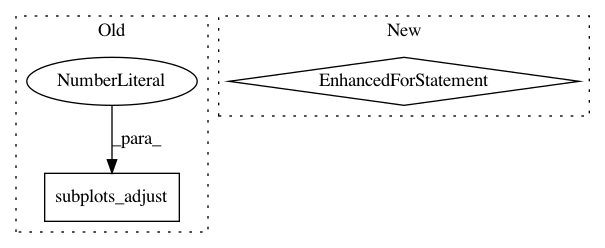

861d9b291f2402c7f89e05bccf00f446487dd0d0,pyntcloud/structures/voxelgrid.py,VoxelGrid,plot_feature_vector,#VoxelGrid#Any#Any#Any#,104
Before Change
break
im = ax.imshow(feature_vector[i], cmap=cmap, interpolation="none")
ax.set_title("Level " + str(i))
fig.subplots_adjust(right=0.8)
cbar_ax = fig.add_axes([0.85, 0.15, 0.05, 0.7])
cbar = fig.colorbar(im, cax=cbar_ax)
cbar.set_label(mode.upper())
After Change
if d == 2:
fig, axes= plt.subplots(int(np.ceil(self.n_z / 4)), 4, figsize=(8,8))
plt.tight_layout()
for i, ax in enumerate(axes.flat):
if i >= len(feature_vector):
break
im = ax.imshow(feature_vector[:, :, i], cmap=cmap, interpolation="none")
ax.set_title("Level " + str(i))
elif d == 3:
return plot_voxelgrid(self, cmap=cmap)
In pattern: SUPERPATTERN
Frequency: 3
Non-data size: 2
Instances
Project Name: daavoo/pyntcloud
Commit Name: 861d9b291f2402c7f89e05bccf00f446487dd0d0
Time: 2017-03-06
Author: daviddelaiglesiacastro@gmail.com
File Name: pyntcloud/structures/voxelgrid.py
Class Name: VoxelGrid
Method Name: plot_feature_vector
Project Name: theislab/scanpy
Commit Name: 9018fd6e5f6e3e0ce07e734cf71ba7abac649997
Time: 2017-02-02
Author: f.alex.wolf@gmx.de
File Name: scanpy/tools/dpt.py
Class Name:
Method Name: plot_groups
Project Name: uber/ludwig
Commit Name: e3d1e6dfd06c35dec767c53b930fa69fc2ff7b12
Time: 2020-04-14
Author: w4nderlust@gmail.com
File Name: ludwig/utils/visualization_utils.py
Class Name:
Method Name: hyperopt_pair_plot